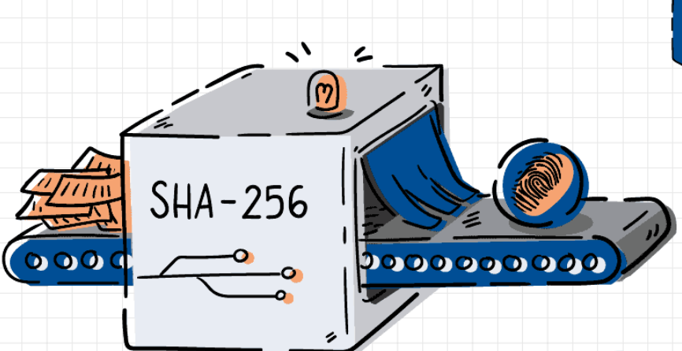

Phishing is more common than you might think. Here are a few fun facts to show why CryptoPhish exists and why staying alert online really matters.
83% of organizations experienced phishing attacks last year.
(Proofpoint, 2024)
Organizations gain $5 in ROI for every $1 spent on security training.
(Aberdeen, 2024)
1.5 million phishing emails are sent daily with increasingly advanced techniques.
(PhishLabs, 2024)
We decided to do our project on phishing because it is one of the most common and damaging threats in cybersecurity today. While interning in a Security Operations Center at an insurance company, I (Ikran) saw firsthand how frequent and dangerous these attacks are. Phishing emails come in daily, targeting employees with messages that look convincing but are designed to steal credentials or deploy malware. One major real-world example is the 2021 attack on CNA Financial. According to Bloomberg, attackers used a phishing email to access CNA’s systems and launch ransomware, leading the company to pay forty million dollars to recover. That event showed just how high the stakes are. CryptoPhish helps users slow down, think critically, and recognize warning signs before harm is done. It is designed to be both a protective tool and an educational one, because awareness is one of the strongest forms of defense.
We don't want users to just click “Scan” and leave. Every result on CryptoPhish includes short explanations of SHA-256 hashing, SSL expiration, and other concepts. The math we studied—like modular arithmetic and entropy—comes alive in practical, everyday use.
CryptoPhish will soon support full email body analysis. Users will paste suspicious emails into a secure sandbox, where red flags like QR codes, urgency language, and malicious domains are highlighted. In the long term, we envision an educational hub with cryptography visualizers, entropy heat maps, and interactive quizzes.